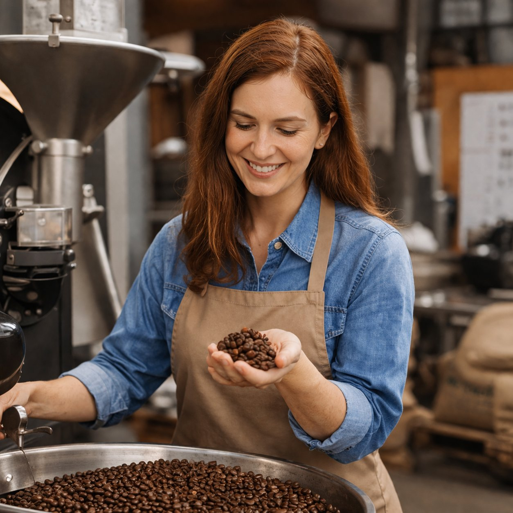
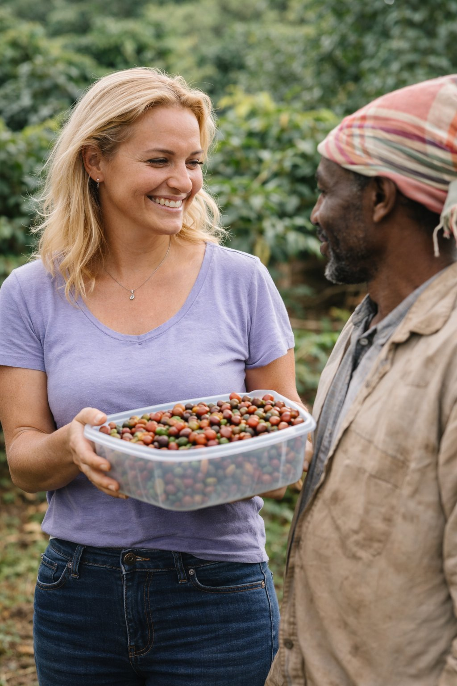
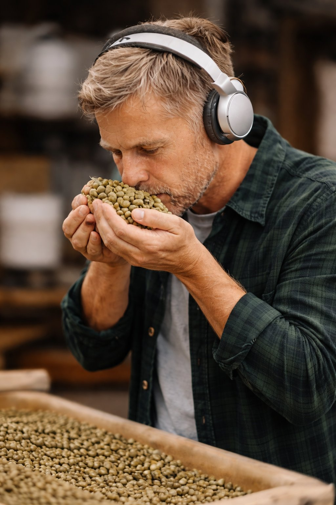

Tannenkaffee
seit 2010
Eine wilde Reise durch den Schwarzwald – klicke auf die Karten!

Die Gründung
Elena kehrt aus Äthiopien zurück und mietet einen Keller im Stühlinger. Die erste Probatone 5 wird angeliefert.
Erste Lieferung
12 Tüten per Fahrrad an die ersten Stammkunden. Elena radelt bis nach Littenweiler.
Finn kommt ins Team
Der erste Angestellte aus München – ab sofort Hüter der Bohne.
1 Jahr Tannenkaffee!
Party mit 80 Gästen in der Rösterei. Kuchen, Kaffee und Tanz bis Mitternacht.
Erste Äthiopien-Reise
Elena besucht die Kooperative in Yirgacheffe – der Grundstein für Direkthandel.
Das erste Café öffnet
8 Stühle, täglich wechselnder Filterkaffee. Die Schlange steht bis auf die Straße.
Erster Podcast
„Kaffee mit Wurzeln" – Folge 1. Elena über Äthiopien, Freiburg und das schwarze Gold.
Drei Partnerkooperativen
Äthiopien, Kolumbien, Guatemala – direkter Handel, faire Preise.
Bio-Zertifizierung
Alle Rohkaffees EU-bio-zertifiziert. 100% Ökostrom, Aufforstung im Schwarzwald.
Café schließt – Wandel beginnt
Lockdown trifft hart. Elena entscheidet: Online-Shop, Abos, digitale Workshops.

Neue Rösterei
Umzug in die Südstadt. Neben der Rösterei öffnet ein kleines Café – Jonas hinter der Theke.
Tannenkaffee heute
2.000+ Abonnenten, 3 Kooperativen, 8 Mitarbeitende – und noch immer dieselbe Leidenschaft.
Unsere Werte
Was uns antreibt.
Direkter Handel
Wir kaufen direkt – fair, transparent, persönlich.
Schwarzwald
Freiburg ist unser Zuhause. Aufforstung, Ökostrom, Verwurzelung.
Handwerk
Kleine Chargen, präzise Profile, ehrliche Röstung.
Offene Rösterei
Jeden ersten Samstag: alle dürfen rein.
Das Team
Menschen hinter dem Kaffee.

Elena Berger
Gründerin & Röstmeisterin
Studierte Agrarwissenschaftlerin, Weltreisende, Kaffee-Visionärin.
Jonas Wulf
Barista & Schulungsleiter
Deutscher Barista-Meister 2017. Hüter der Espressomaschinen.

Amira Khoury
Einkauf & Partnerbeziehungen
Vier Sprachen, drei Kontinente, ein Ziel: faire Preise für alle.

Finn Schäfer
Röster & Qualitätskontrolle
200+ dokumentierte Chargen. Bringt Bohnen zum Singen.
Im Café
Lena Vogel
Servicekraft
Sorgt im Café für den perfekten ersten Eindruck – und dafür dass nie eine Tasse leer bleibt.
Tom Richter
Auszubildender Röster
Im zweiten Lehrjahr. Lernt von Finn alles über Röstprofile und Qualitätskontrolle.
Sara Bauer
Servicekraft
Kennt jeden Stammgast mit Namen und weiß was er trinkt, bevor er bestellt.